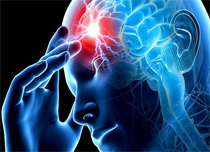

Афазия - это локальное отсутствие или нарушение уже сформировавшейся речи. Возникает при органических поражениях речевых отделов коры головного мозга в результате перенесённых травм, опухолей, инсультов, воспалительных процессов и при некоторых психических заболеваниях.